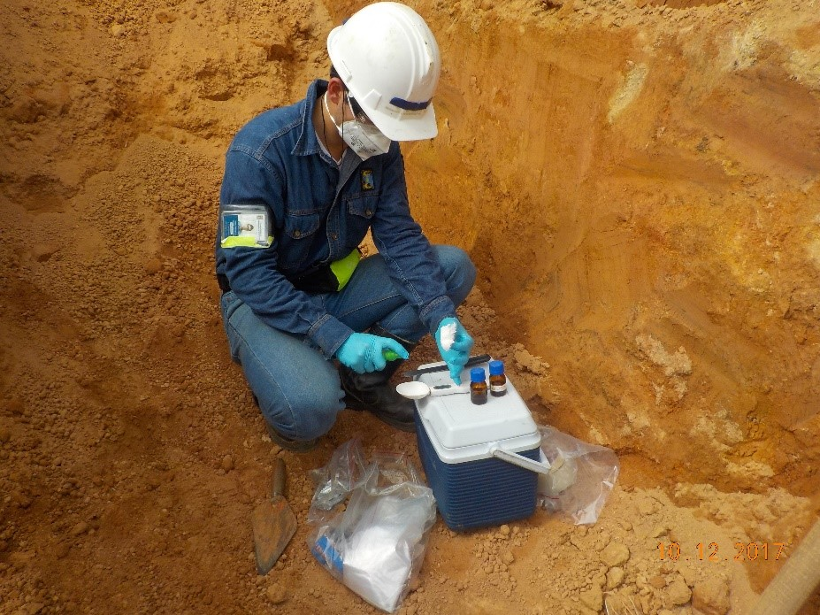
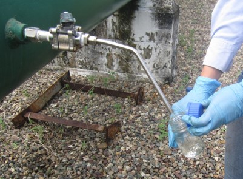

Inicio
CIC
Servicios
Productos
Contacto
Nuestros productos
Muestras Sólidas
Kit para la recolección de muestras solidas asociadas a procesos de crecimiento microbianos.
Descargar Ficha Técnica
Ficha de Seguridad
Enlace Capacitación

Muestras Superficies
Kit para toma de muestras de agentes microbianos asociados a la formación de biopelículas en superficies.
Descargar Ficha Técnica
Ficha de Seguridad
Enlace Capacitación

Muestras Líquidas
Kit para la recolección de muestras líquidas asociadas a procesos de crecimiento microbianos.
Descargar Ficha Técnica
Ficha de Seguridad
Enlace Capacitación
Design & Developed by Hugo Colmenares
Follow me on: